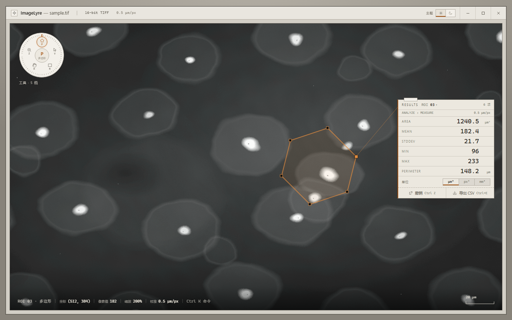
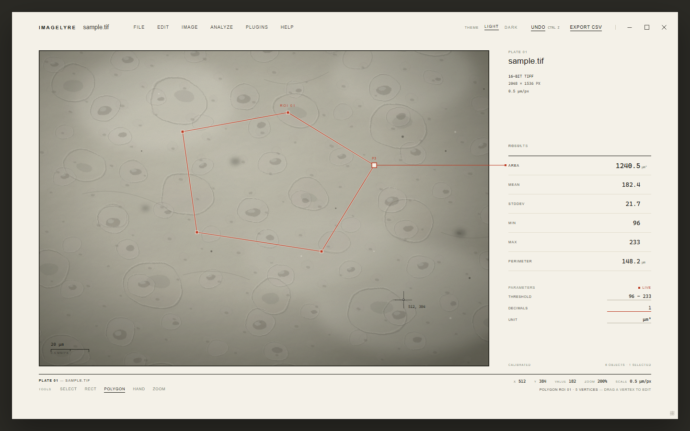
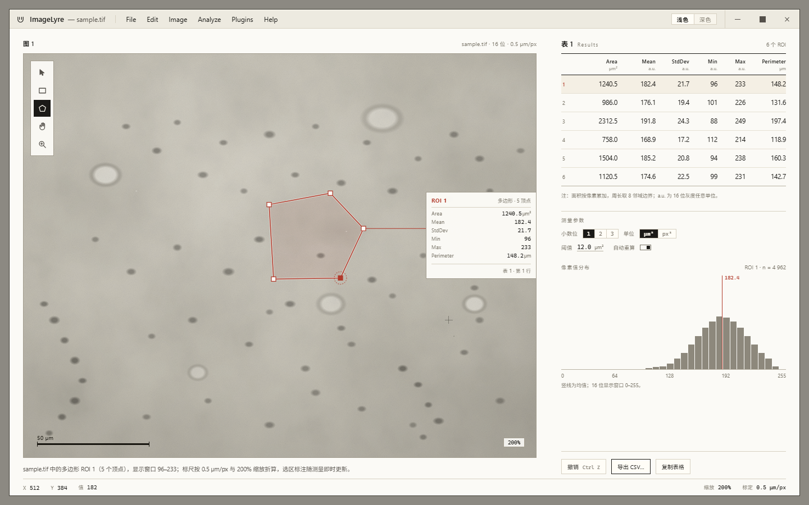

| 版本 | 骨架 | 记忆点 | 最大风险 |
|---|---|---|---|
| A2 转塔 | 无菜单、无栏；转塔 + 拴线读数签 + 底沿 HUD | 工具转塔；单位档位一拨，六个数重印 | 转塔图标与读数签压样本，第一次用要猜 |
| B2 引线 | 整窗一张纸：页眉、图版、右页边账、页脚 | 顶点 P3 到 AREA 的 1px 朱红引线 | 字小、像印刷稿，操作感弱 |
| C2 尺侧 | 画布出血；顶脊菜单；底部 µm 尺；读数钉在 ROI；Results 右缘抽屉 | 拖顶点：残影 + Δ 面积 + 读数同步 | 顶脊压在图上；Results 藏进抽屉 |
| D2 挂签 | 无菜单无栏；四角信息 + 挂签读数 + 底部键帽图例 | 从顶点牵出的标本签 | 发现性最弱，读数偏小 |
| E2 图版 | 图左页、表右页、图注引线；工具浮在图角 | 图注与表 1 第 1 行被同一条引线钉住 | 像论文页，工具感弱 |
| F2 命令条 | 满幅图；顶/左标尺；底部命令条；结果卡浮出 | 圈出选区，尺寸线与六项读数一起长出 | 结果卡挡图；命令条信息偏挤 |
共同的新东西：读数开始跟着选区走（A、C、D），引线把形与数连起来（B、E），菜单退到顶脊、页眉或命令条（C、B、F），画布第一次真的出血（C、D、F）。